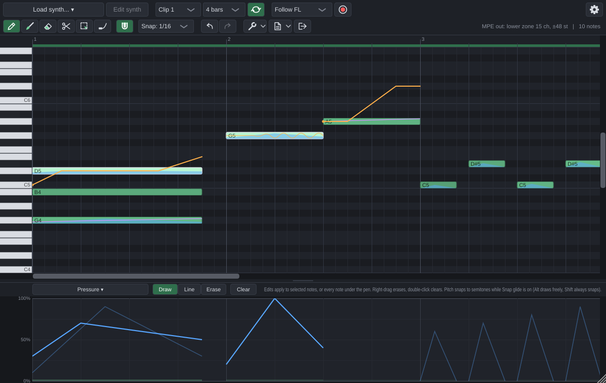

MPE Roll is an instrument plugin for FL Studio with its own piano roll: VST3, plus VST2 on Windows, AU on macOS and a standalone app. You load your synth inside it (VST3, VST2 or CLAP), so every note gets its own pitch glide, pressure, timbre and controllers. FL Studio's own piano roll can't send per-note expression to plugins.
For FL's own synths (FLEX, Sytrus, Harmor, 3xOsc...), which can't receive MPE at all, MPE Roll writes a piano roll script that rebuilds the clip in FL's own piano roll with slide notes, fine pitch and Mod X / Mod Y.

Every change is built for Windows (an installer, or the files to copy by hand) and for macOS: Downloading a build says where to find them. MPE Roll is an early version: automated tests cover it on Windows, macOS and Linux, and it has been lightly tested inside FL Studio so far.
MPE Roll is free and open source, with no ads and no tracking. If it helps you, a donation keeps it going. Donate: Cash App, or Bitcoin, Ethereum, Solana and Monero by QR code.